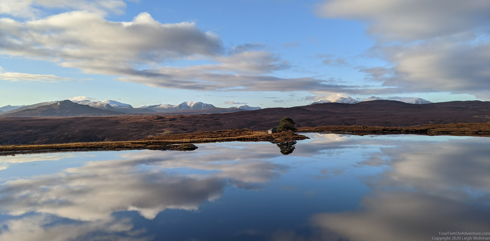
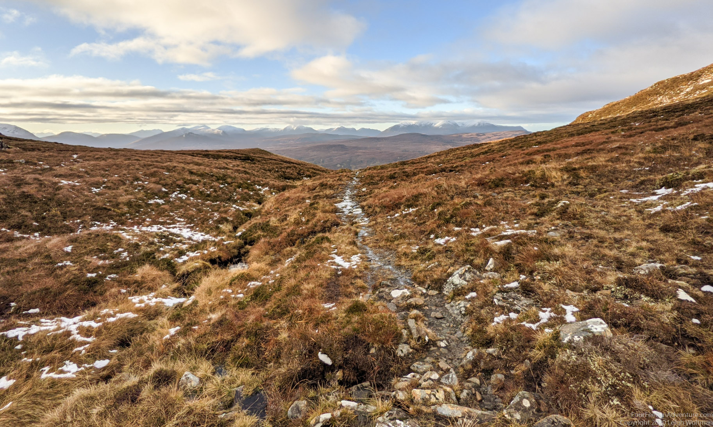
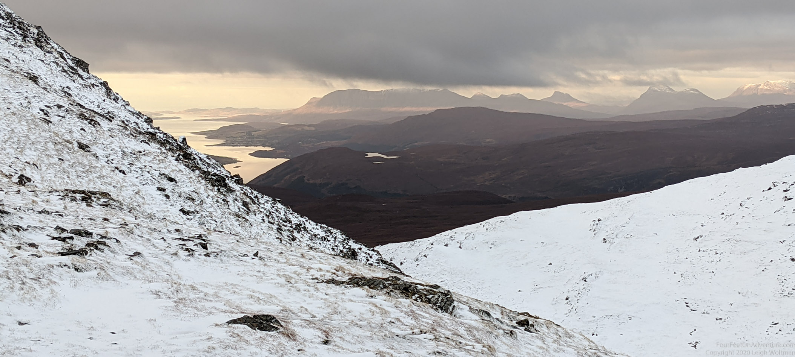
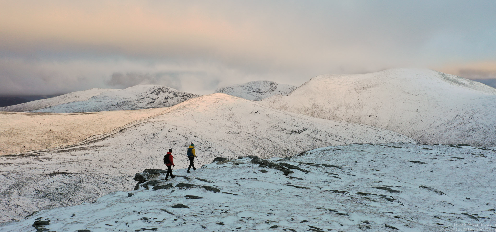
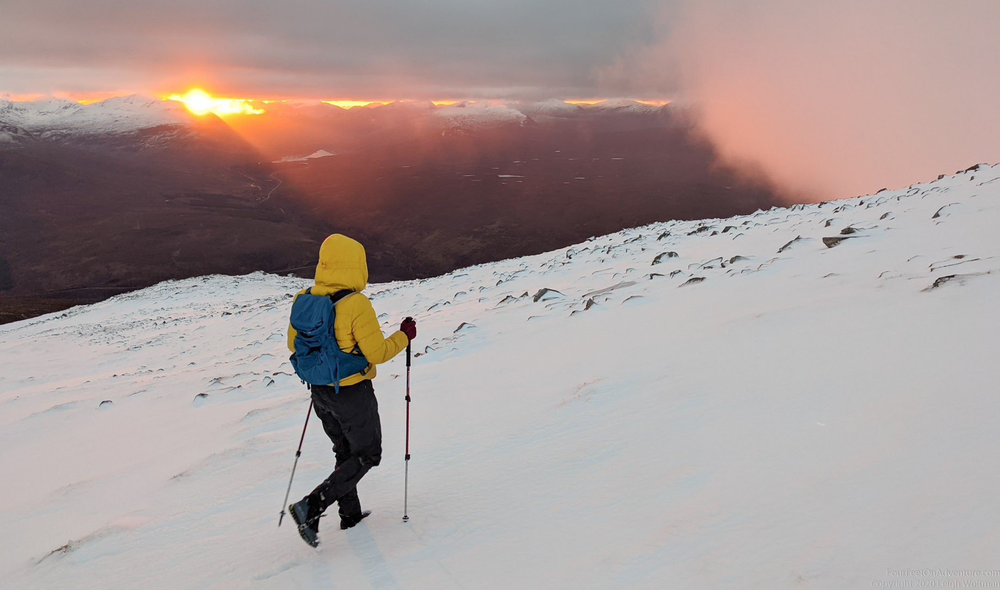
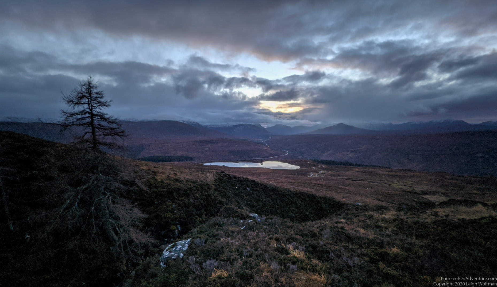
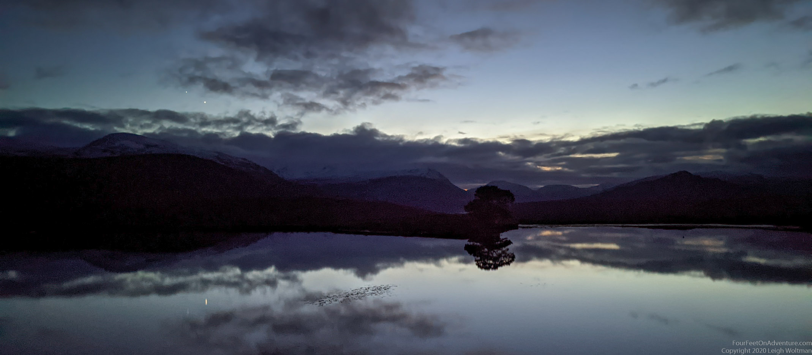

The first snow in the hills is always exciting. We couldn’t wait to get out! Finally, it was weekend. And good conditions. And the snow was still there. How lucky were we!

As often happens in the weekend, our start was not the fastest. But, better late then never. And the headlamps were charged, and in the packs. All good.

There was almost no wind, and even a little bit of sun to start with, though it was peaking through a thick layer of clouds that was high enough that the peaks of the hills were free from clouds. But, with the sun so low at the horizon around this time of year, it didn’t take long before the sun disappeared behind another hill and we were in the shadow where it was a bit colder.

The trails were snowy as we got higher. Under such circumstances we start without snow, then a little dusting, then some more, then higher snow but you’re still sinking though. Unless, finally, you’ve gotten high enough that it’s cold enough that the snow is strong enough to hold your weight and the going is suddenly easy.

Getting to the top usually gives amazing views, but when there is snow in the hills the views are extra special. Seeing the snow topped Fisherfield munroes in the distance was magical. As the sun was setting further the horizon turned bright yellow. We forgot our ideas of making it down before dark as it was just too magical. A few sunbeams peaked under the clouds through Fisherfield hills, and as the sun was setting, the beams kept coming closer, until first the cloud next to us suddenly turned orange. And then the sun shone right at us. Imagine one of those amazing sunsets when the clouds turn orange, and then being right in the middle of that. Wow!

But, as always, eventually the sun sets. Time to head home. We descended but realized this magical day wasn’t over yet. We could see Mars, Jupiter and Saturn and a bunch of starts around us. Jupiter and Saturn were very close to each other, and so bright that they reflected in a lake that we were passing on the way.

